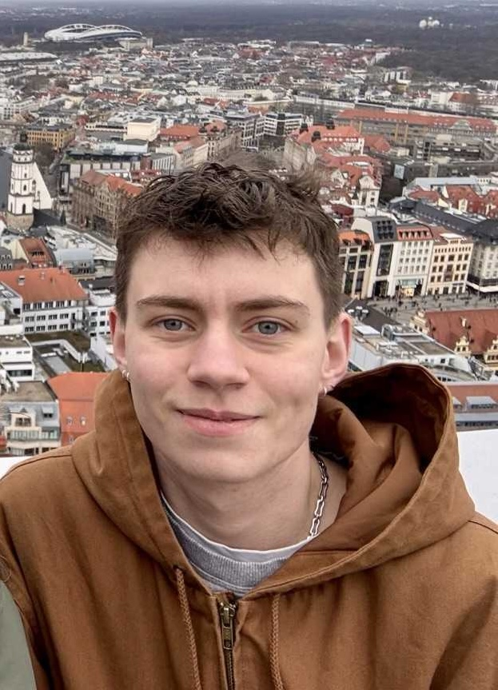

[jaːkɔp liː zʊχaːt]
PhD Student @ LION Lab, Leipzig University, DE
Hello there! I'm Jacob, a general linguistics enthusiast and PhD student in Natural Language Processing at LION Lab, lead by Leonie Weissweiler.

My research centers on cross-linguistic morphosyntax and what it reveals about multilingual (large) language models. Phonetics and phonology also have a special place in my heart.
Decision-tree diagnostics for subject–verb agreement across languages, building on the MultiBLiMP benchmark.
LREC 2026 · Palma de Mallorca · ACL Anthology · DOI
EMNLP 2025 · Suzhou, China · ACL Anthology · DOI